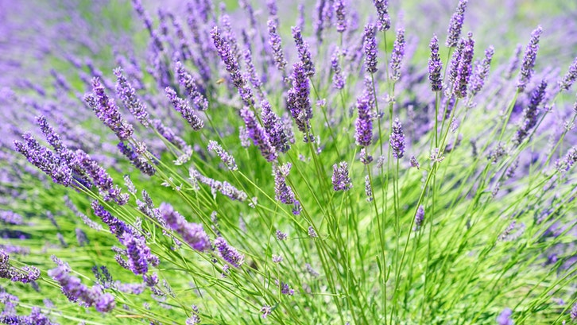

Bunga kembang sepatu atau yang memiliki nama latin Hibiscus
rosa-sinensis adalah tanaman semak yang berasal dari Asia Timur.
Tinggi tanaman kembang sepatu mencapai 2 m hingga 5 m dan bisa
tumbuh sepanjang tahun.

Lavender
Bunga yang termasuk ke dalam famili Lamiaceae ini memang bukan
bunga tropis dan biasanya tumbuh di dataran tinggi sekitar
500-1300 mdpl.
Bougenville
Bunga bougenville merupakan salah satu tanaman hias yang banyak
dibudidayakan di Indonesia. Bunga ini biasa juga disebut dengan
bunga kertas karena kelopak bunganya tipis dan ringan, mirip
sekali dengan kertas.
Melati
Bunga melati merupakan bunga yang sangat populer di Indonesia,
bahkan dijadikan sebagai salah satu bunga nasional. Bunga ini
memiliki aroma wangi yang menyenangkan dan biasanya dipakai
untuk campuran teh,pengharum ruangan.
Anggrek
Bunga anggrek merupakan salah satu bunga yang menjadi favorit
banyak orang karena memiliki bentuk dan warna yang indah.
Indonesia bahkan menjadikan salah satu jenis bunga anggrek,
yaitu bunga anggrek bulan, sebagai bagian dari bunga nasional.
Teratai
Bunga teratai dianggap sebagai ratunya bunga yang tumbuh di air.
Bunga ini tumbuh di permukaan air dengan cara menyembul dari
tengah daun yang berbentuk bulat dan melebar.
Mawar
Bunga mawar sering kali dijadikan sebagai simbol cinta dan
keromantisan. Jenis dan warnanya pun bermacam-macam, mulai dari
mawar merah, putih, kuning, bahkan biru. Setiap jenis bunga
mawar pun mempunyai makna yang mendalam.
Tulip
Bunga tulip memang jarang dijumpai di Indonesia, tetapi bukan
berarti tidak mungkin untuk menanamnya. Namun, pastikan rumah
Anda berada di area yang cukup tinggi dengan cuaca yang tidak
terlalu panas.